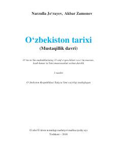

OTO'zbekistonning mustaqillik davri tarixiga oid 11-sinf uchun mo'ljallangan o'quv darsligi.
Ushbu darslik umumta'lim maktablarining 11-sinf o'quvchilari uchun mo'ljallangan bo'lib, O'zbekistonning mustaqillik davri tarixini qamrab oladi. Kitobda mamlakatning mustaqillikka erishishi, siyosiy, iqtisodiy islohotlar, demokratik jamiyat qurish jarayonlari va zamonaviy taraqqiyot bosqichlari batafsil yoritilgan.